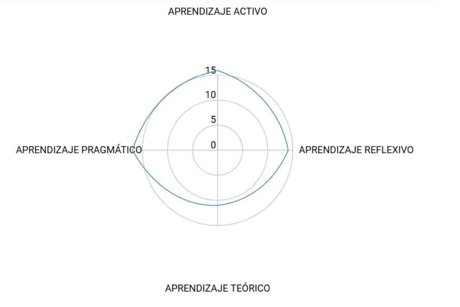
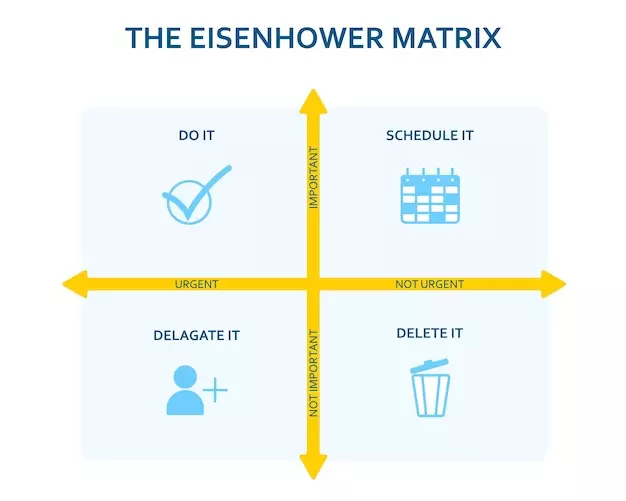

Clase 1: Actividad de integración
Esta clase me ayudó mucho a romper el hielo y empezar a sentirme parte del grupo. Crear el “súper estudiante” ideal me hizo pensar en mis propios hábitos, cómo organizo mi tiempo y qué formas de aprender me funcionan mejor. Me di cuenta de que necesito reforzar algunos hábitos para aprovechar mejor el tiempo que tengo entre estudio, trabajo y mis responsabilidades diarias.

Clase 2: Introducción
La dinámica inicial fue sencilla pero muy efectiva para relajarnos y conocernos mejor. Entender claramente el contenido y la metodología del curso me permitió visualizar las expectativas, lo cual fue útil para mentalizarme y tomar este espacio con seriedad, a pesar de las otras cargas que manejo.
Clase 3: reconocimiento del campus
Conocer la historia y evolución de la sede Yumbo me pareció interesante. Grabar el video me motivó a explorar con más atención el entorno donde paso gran parte del tiempo. Reconocer qué me gusta y qué me incomoda del campus me ayudó a sentirme más conectado
Clase 4: Manejo del estrés
Esta clase fue especialmente valiosa para mí, pues a menudo siento la presión de los compromisos económicos y académicos. Poder hablar abiertamente sobre el estrés y aprender a reconocer sus síntomas y causas me hizo tomar conciencia de la importancia de no normalizar la sobrecarga emocional.
Clase 5: Capacitación normas APA
Aunque fue una sesión técnica, la encontré muy necesaria. Me brindó claridad sobre cómo presentar los trabajos académicos correctamente y con profesionalismo. Esto me ayuda a evitar perder tiempo corrigiendo errores de forma y me da mayor seguridad al momento de entregar mis tareas. normas apa

Clase 6: Normatividad en el contexto universitario
Conocer las normas internas de la universidad me pareció fundamental. Saber cuáles son mis derechos y deberes como estudiante me facilita desenvolverme con mayor seguridad y tomar decisiones informadas dentro de la institución.

Clase 7: Normatividad para procesos de investigación
Esta sesión me permitió entender mejor cómo se estructura un proyecto de investigación. Además, conocer ejemplos de egresados que han logrado grandes cosas gracias a sus investigaciones me inspiró y reafirmó la importancia del esfuerzo y la dedicación en este camino.

Clase 8: Exposiciones del Acuerdo 009
El uso de Kahoot junto con la exposición resultaron ser métodos didácticos efectivos. Además de aprender sobre la normatividad, esta actividad fortaleció el trabajo en equipo. Sentí que aprender en comunidad es más enriquecedor que hacerlo de manera individual.

Clase 9: Ladrones del tiempo
Fue un momento importante para hacer un autoanálisis. Identificar las actividades que me hacen perder tiempo, como las redes sociales o postergar tareas, me permitió entender por qué, aunque cumplo con los plazos, suelo procrastinar. Esta clase me impulsó a tomar con mayor seriedad la gestión del tiempo. ladrones del tiempo

Clase 10: Organizar tareas
La matriz de Eisenhower fue una herramienta muy útil para aprender a priorizar de forma práctica y visual. Gracias a ella, empecé a ordenar mejor mis pendientes y a planificar la distribución de mi semana de manera más estratégica.
Clase 11: Exposición de herramientas (uso de Asana)
Al conocer más a fondo Asana, una herramienta que ya utilizo para organizar mis actividades, encontré nuevas formas de sacarle provecho. Me gusta porque me permite visualizar claramente mis tareas, asignar tiempos y dividir proyectos grandes en pasos manejables. Esta sesión no solo confirmó el valor de esta aplicación, sino que también me dio ideas nuevas tras ver cómo otros compañeros gestionan su tiempo. Usar Asana ha contribuido a reducir mi ansiedad y a tener un mejor control sobre mi agenda académica y personal. ingresar a asana

Reflexiones
es, básicamente, el núcleo del artículo: los ladrones de tiempo son esos factores —como interrupciones, notificaciones, correos, reuniones mal organizadas o la procrastinación— que consumen tu tiempo sin darte cuenta.
Los artículos analizados destacan cómo el uso de la inteligencia artificial, la limpieza y visualización de datos, y metodologías como el análisis envolvente de datos (DEA) mejoran la eficiencia empresarial, la toma de decisiones y la gestión en sectores como salud, finanzas e industria. Estas herramientas permiten optimizar procesos, identificar ineficiencias y potenciar el valor estratégico de los datos.